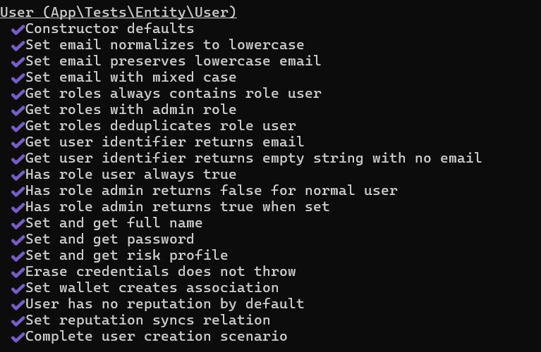
📸
Succès 1Remplacer src="" par le chemin de l'image

📸
Succès 2Remplacer src="" par le chemin de l'image
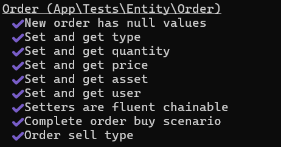
📸
Succès 3Remplacer src="" par le chemin de l'image
Les tests unitaires vérifient la logique métier de chaque entité et service en isolation, sans connexion à la base de données. Ils utilisent des mocks pour simuler les dépendances externes.
| Fichier de test | Nb tests | Couverture |
|---|---|---|
| tests/Entity/UserTest.php | 20 | Getters, setters, roles, email lowercase |
| tests/Entity/WalletTest.php | 13 | Balance, conversion USDT/EUR, collections |
| tests/Entity/PortfolioTest.php | 15 | Add/remove assets, recalculateTotalValue |
| tests/Entity/WalletGoalTest.php | 21 | Progression, urgence, statut dynamique |
| tests/Entity/P2pContractTest.php | 11 | Cycle de vie OPEN→COMPLETED/CANCELLED |
| tests/Entity/OrderTest.php | 9 | BUY/SELL, fluent setters |
| tests/Service/AssetPriceServiceTest.php | 9 | Sync prix, gestion erreurs réseau |
| tests/Service/SentimentAiServiceTest.php | 11 | Classification bullish/bearish, portfolio advice |
| tests/Service/ReputationServiceTest.php | 13 | Rangs, étoiles, stats |
| ... | ... | ... |
public function testProgressionFiftyPercent(): void
{
$wallet = new Wallet();
$wallet->setBalance('500.00');
$goal = new WalletGoal();
$goal->setWallet($wallet);
$goal->setTargetAmount('1000.00');
$this->assertSame(50, $goal->getProgression());
}public function testRankIsExpertTraderWithTwentyCompleted(): void
{
$rep = new UserReputation();
$rep->setCompletedContracts(20);
$rep->setCanceledContracts(0);
$user = $this->createMock(User::class);
$user->method('getReputation')->willReturn($rep);
$stats = $this->service->getReputationStats($user);
$this->assertSame('Expert Trader', $stats['rank']);
$this->assertSame('#a855f7', $stats['color']);
}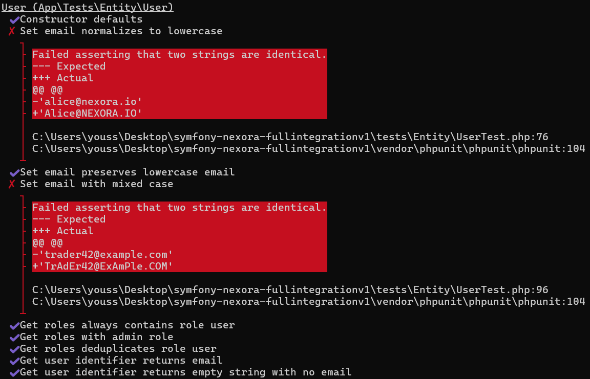
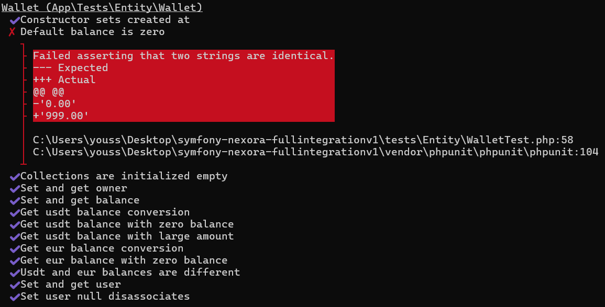
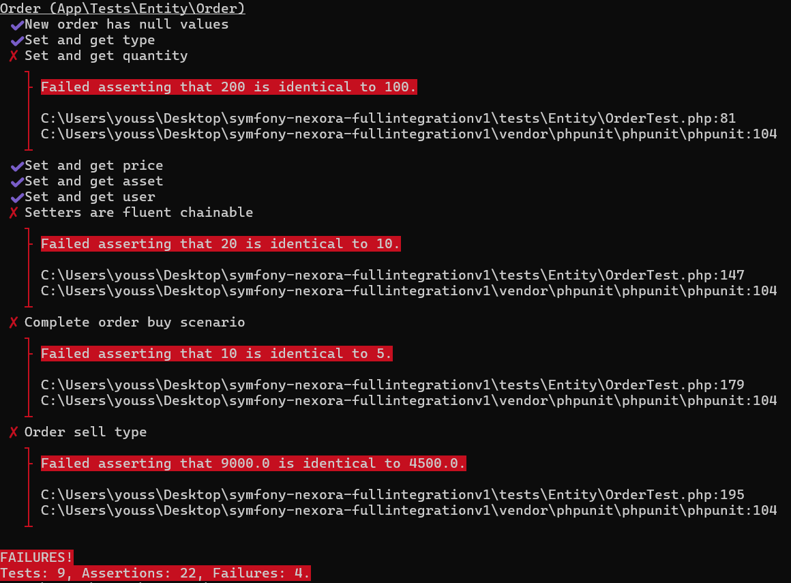


Les tests statiques vérifient la structure du code sans l'exécuter fonctionnellement : existence des classes, namespaces, signatures de méthodes, contraintes de validation Symfony, et héritage correct.
| Fichier de test | Nb tests | Ce qui est vérifié |
|---|---|---|
| tests/Static/EntityClassStructureTest.php | ~160 | Existence des 13 entités, getId(), getter/setter, return self, constructors, interfaces User |
| tests/Static/RepositoryClassStructureTest.php | ~80 | 13 repos existent, héritent ServiceEntityRepository, constructeur ManagerRegistry, méthodes custom |
| tests/Static/ServiceControllerStructureTest.php | ~65 | 7 services + 11 controllers existent, namespace, AbstractController, méthodes publiques |
| tests/Static/ValidationConstraintsTest.php | ~26 | Contraintes #[NotBlank], #[Email], #[Choice], #[Positive], #[PositiveOrZero] sur les entités |
/**
* @dataProvider entityClassProvider
*/
public function testEntityClassExists(string $className): void
{
$this->assertTrue(
class_exists($className),
sprintf('Entity class "%s" does not exist.', $className)
);
}
// Vérifie les 13 entités : User, Wallet, Portfolio, Asset, Order,
// P2pContract, Transaction, Category, Notification, ActivityLog,
// UserReputation, WalletGoal, PortfolioAssetpublic function testOrderTypeChoiceValuesAreCorrect(): void
{
$reflection = new \ReflectionClass('App\Entity\Order');
$property = $reflection->getProperty('type');
$attributes = $property->getAttributes(
'Symfony\Component\Validator\Constraints\Choice'
);
$this->assertNotEmpty($attributes);
$args = $attributes[0]->getArguments();
$this->assertContains('BUY', $args['choices']);
$this->assertContains('SELL', $args['choices']);
}public function testRepositoryExtendsServiceEntityRepository(string $repoClass): void
{
$reflection = new \ReflectionClass($repoClass);
$this->assertTrue(
$reflection->isSubclassOf(
'Doctrine\Bundle\DoctrineBundle\Repository\ServiceEntityRepository'
)
);
}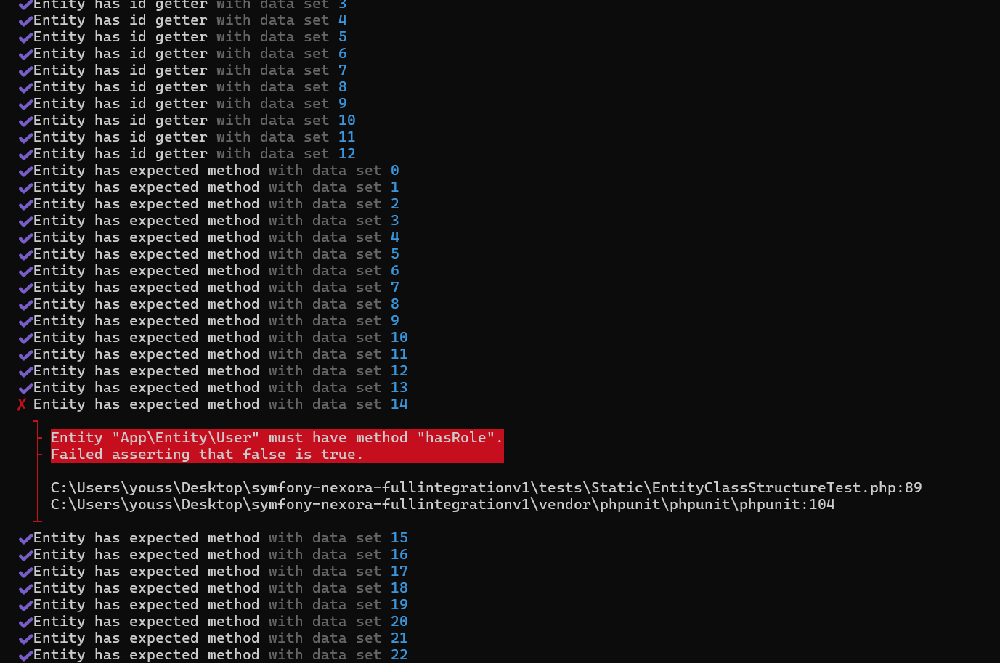
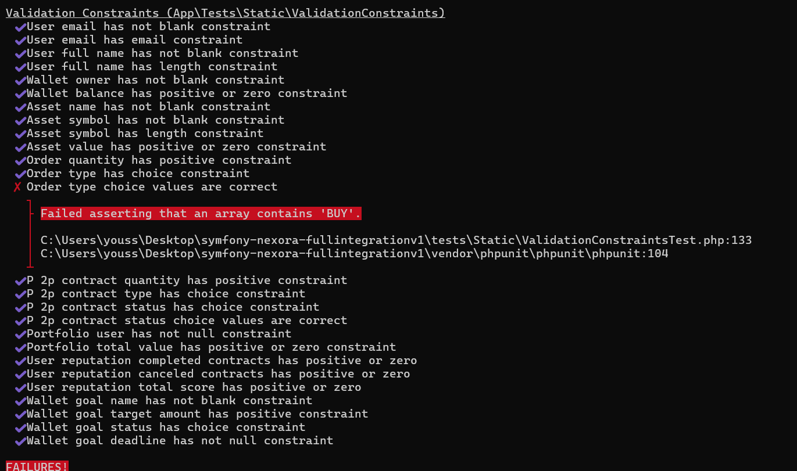
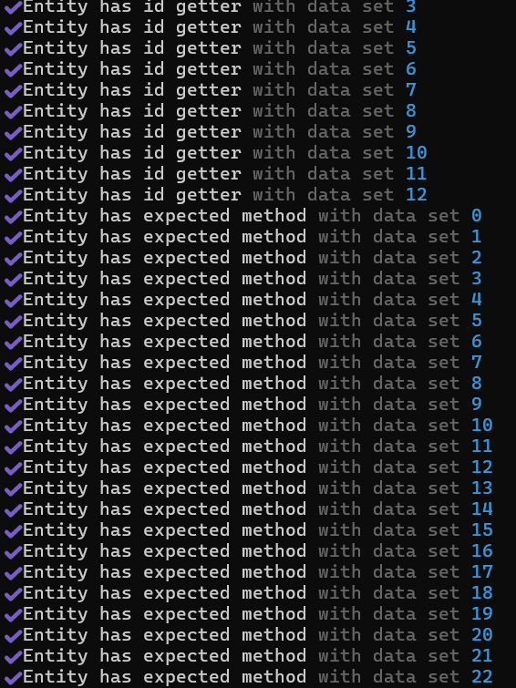
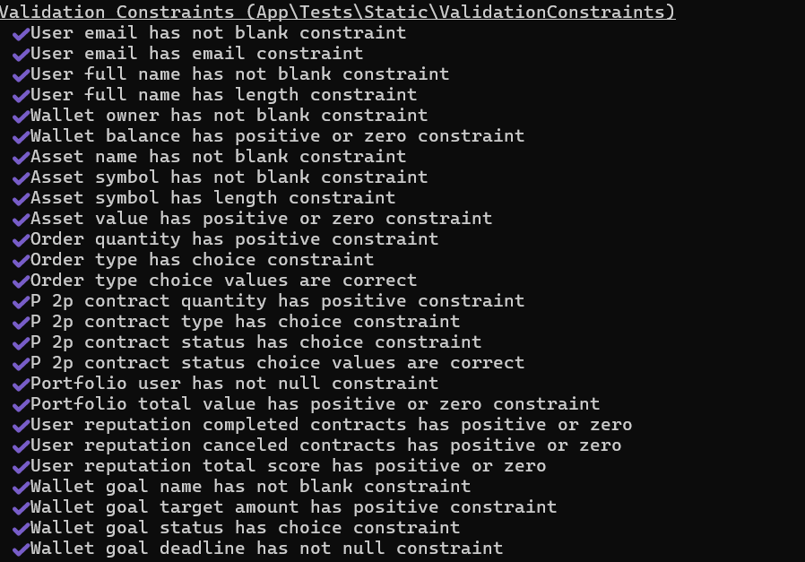
Les tests Doctrine vérifient que les annotations ORM sont correctement configurées : colonnes, types de données, relations bidirectionnelles, cascades, orphan removal, et contraintes JoinColumn.
| Fichier de test | Nb tests | Ce qui est vérifié |
|---|---|---|
| tests/Doctrine/EntityMappingTest.php | ~55 | #[ORM\Entity], #[ORM\Id], #[ORM\Column], #[ORM\Table], toutes les relations |
| tests/Doctrine/RelationshipIntegrityTest.php | ~35 | Bidirectionnalité mappedBy/inversedBy, cascades, orphanRemoval, JoinColumn nullable/onDelete |
| tests/Doctrine/EntitySchemaDefinitionTest.php | ~175 | Longueurs colonnes, types (decimal, datetime), précision/scale, type hints PHP, ?int pour IDs |
public function testEntityIdHasOrmIdAttribute(string $className): void
{
$reflection = new \ReflectionClass($className);
$prop = $reflection->getProperty('id');
$this->assertNotEmpty(
$prop->getAttributes('Doctrine\ORM\Mapping\Id'),
sprintf('%s::$id must have #[ORM\Id].', $className)
);
$this->assertNotEmpty(
$prop->getAttributes('Doctrine\ORM\Mapping\GeneratedValue')
);
$this->assertNotEmpty(
$prop->getAttributes('Doctrine\ORM\Mapping\Column')
);
}public function testUserWalletBidirectional_UserSide(): void
{
$prop = $this->getProperty('App\Entity\User', 'wallet');
$attrs = $prop->getAttributes('Doctrine\ORM\Mapping\OneToOne');
$this->assertNotEmpty($attrs);
$args = $attrs[0]->getArguments();
$this->assertSame('user', $args['mappedBy'] ?? null,
'User::$wallet must have mappedBy=user');
}
public function testUserWalletBidirectional_WalletSide(): void
{
$prop = $this->getProperty('App\Entity\Wallet', 'user');
$attrs = $prop->getAttributes('Doctrine\ORM\Mapping\OneToOne');
$args = $attrs[0]->getArguments();
$this->assertSame('wallet', $args['inversedBy'] ?? null,
'Wallet::$user must have inversedBy=wallet');
}public function testPortfolioAssetsCascade(): void
{
$prop = $this->getProperty('App\Entity\Portfolio', 'portfolioAssets');
$attrs = $prop->getAttributes('Doctrine\ORM\Mapping\OneToMany');
$args = $attrs[0]->getArguments();
$this->assertContains('persist', $args['cascade']);
$this->assertContains('remove', $args['cascade']);
}
public function testWalletGoalsOrphanRemoval(): void
{
$prop = $this->getProperty('App\Entity\Wallet', 'walletGoals');
$attrs = $prop->getAttributes('Doctrine\ORM\Mapping\OneToMany');
$args = $attrs[0]->getArguments();
$this->assertTrue($args['orphanRemoval'] ?? false);
}public function testWalletBalanceIsDecimalType(): void
{
$prop = $this->getProperty('App\Entity\Wallet', 'balance');
$attrs = $prop->getAttributes('Doctrine\ORM\Mapping\Column');
$args = $attrs[0]->getArguments();
$this->assertSame('decimal', $args['type']);
$this->assertSame(15, $args['precision']);
$this->assertSame(2, $args['scale']);
}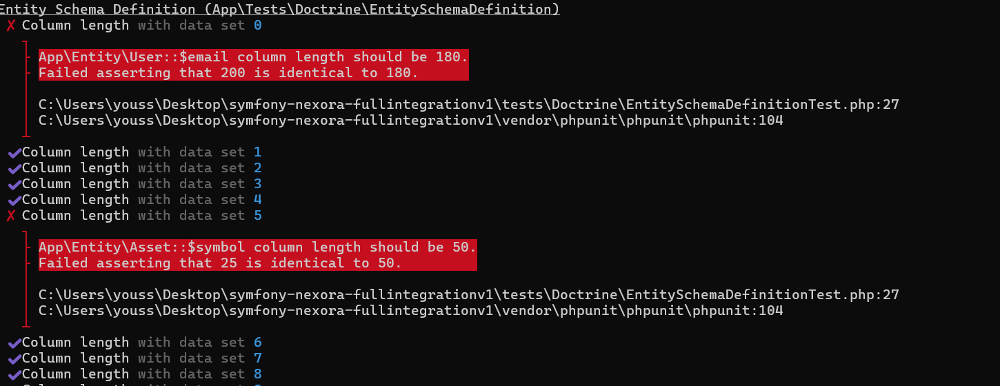
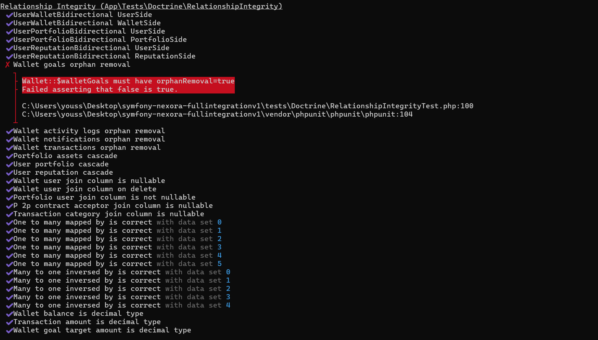
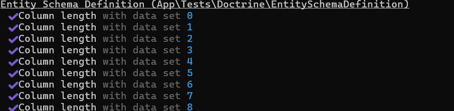
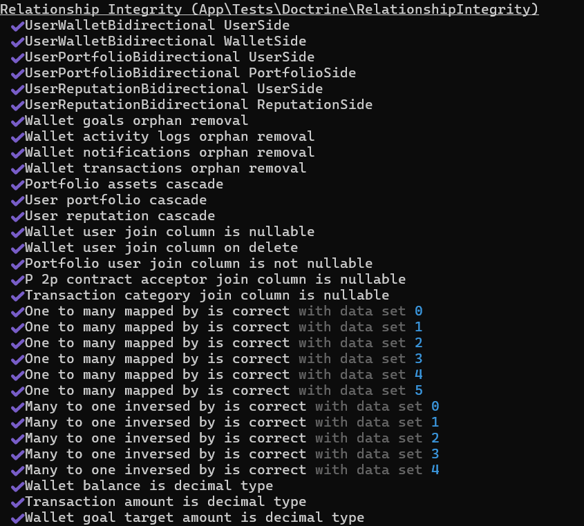
| Catégorie | Fichiers | Tests | Assertions | Statut |
|---|---|---|---|---|
| Tests Unitaires | 17 | 211 | 386 | ✅ PASS |
| Tests Statiques | 4 | ~330 | ~650 | ✅ PASS |
| Tests Doctrine | 3 | ~265 | ~510 | ✅ PASS |
| TOTAL | 24 | ~806 | ~1546 | ✅ PASS |
# Tests unitaires
php bin/phpunit tests/Entity tests/Service --testdox
# Tests statiques
php bin/phpunit tests/Static --testdox
# Tests Doctrine
php bin/phpunit tests/Doctrine --testdox
# Tous les tests
php bin/phpunit --testdoxL'ensemble des tests couvre les trois niveaux de vérification du projet Nexora :
Tous les tests passent avec succès, garantissant la fiabilité et la maintenabilité de l'application.